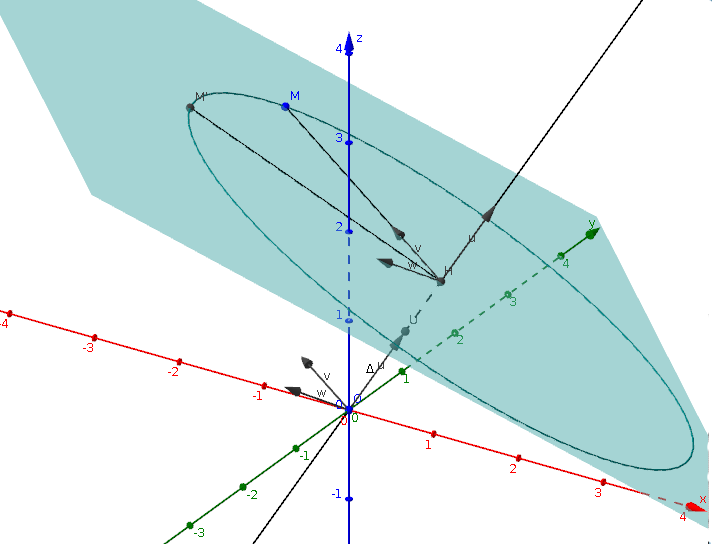
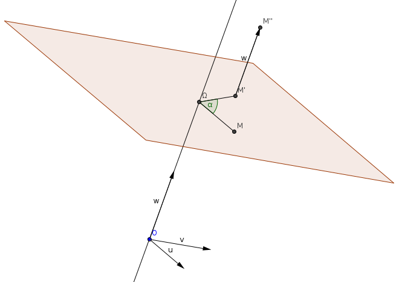

| Choisissez votre langue ! | Choose your language ! |
Cette page suppose connus tous les résultats de , et en particulier le cas de l'espace à 3 dimensions.
Définitions
Conformément aux usages respectés jusqu'ici : This page assumes that all the results of , and in particular the case of 3 dimensional space.
Definitions
In accordance with the practices respected so far:définition 1
Un déplacement de l'espace est une , donc une dont est une .
definition 1
A proper isometry of space is a , that is an whose is a .
propriété 1
Tout d'abord, comme dans le plan et en dimension quelconque, les (qui ont pour application linéaire associée l'application identique) sont des déplacements.
property 1
First of all, as in the plane and in any dimension, the (which have for associated linear application the identity map) are proper isometries.
On s'intéresse maintenant aux déplacements de l'espace qui ne sont pas des translations. Distinguons deux cas :
Les possibilités sont donc:
Nous éliminons les cas 2) et 4) qui correspondent à des isométries négatives.
Le cas 6) correspond également à une isométrie négative u, car si D est la droite associée à la valeur propre -1 et H son orthogonal, u induit sur H une isométrie vectorielle sans point fixe autre que l'origine, donc une rotation vectorielle et le déterminant de u est alors égal à -1.
Il ne reste donc que les deux cas :
Le déplacement possède au moins un point fixe.
Dans ce cas la matrice de l'application linéaire orthogonale u associée possède une ou trois valeurs propres réelles à l'ordre de multiplicité près, qui sont toutes égales à +1 ou à -1.Les possibilités sont donc:
- 1,1,1 : 1 de multiplicité 3
- -1,-1,-1 : -1 valeur propre de multiplicité 3
- 1,-1,-1 : 1 valeur propre simple et -1 valeur propre double
- -1,1,1 : -1 valeur propre simple et 1 valeur propre double
- 1 : 1 valeur propre unique et simple
- -1 : -1 valeur propre unique et simple
Nous éliminons les cas 2) et 4) qui correspondent à des isométries négatives.
Le cas 6) correspond également à une isométrie négative u, car si D est la droite associée à la valeur propre -1 et H son orthogonal, u induit sur H une isométrie vectorielle sans point fixe autre que l'origine, donc une rotation vectorielle et le déterminant de u est alors égal à -1.
Il ne reste donc que les deux cas :
- 1,-1,-1 : 1 valeur propre simple et -1 valeur propre double
- 1 : 1 valeur propre unique et simple
We are now interested in the displacements of space which are not not translations. Let us distinguish two cases:
The possibilities are therefore:
We eliminate cases 2) and 4) which correspond to improper isometries.
Case 6) also corresponds to a negative isometry u, because if D is the line associated with the eigenvalue -1 and H its orthogonal, u induces on H a vector isometry without fixed point other than the origin, therefore a vector rotation and the determinant of u is then equal to -1.
So there are only two possible cases left:
The displacement has at least one fixed point.
In this case the matrix of the associated orthogonal linear map u has one or three real eigenvalues up to the order of multiplicity, which are all equal to +1 or -1.The possibilities are therefore:
- 1,1,1 : 1 of multiplicity 3
- -1,-1,-1: -1 eigenvalue of multiplicity 3
- 1,-1,-1: 1 simple eigenvalue and -1 double eigenvalue
- -1,1,1: -1 simple eigenvalue and 1 double eigenvalue
- 1: 1 unique and simple eigenvalue
- -1: -1 unique and simple eigenvalue
We eliminate cases 2) and 4) which correspond to improper isometries.
Case 6) also corresponds to a negative isometry u, because if D is the line associated with the eigenvalue -1 and H its orthogonal, u induces on H a vector isometry without fixed point other than the origin, therefore a vector rotation and the determinant of u is then equal to -1.
So there are only two possible cases left:
- 1,-1,-1: 1 simple eigenvalue and -1 double eigenvalue
- 1: 1 unique and simple eigenvalue
définition 2
On appelle
'rotation affine de l'espace'
d'axe Δ tout déplacement de l'espace admettant Δ comme droite de points fixes.
definition 2
We call
'affine rotation of space'
with axis Δ any proper isometry of space admitting Δ as a straight line of fixed points.
Soit maintenant r une telle application et Δ sa droite de points fixes. Fixons un vecteur unitaire
\( \displaystyle \overrightarrow{u} \)
sur Δ de sorte que
\( \displaystyle \left ( \Delta, \overrightarrow{u} \right ) \)
devient un axe. Dans ce cas si
\( \displaystyle \left ( \overrightarrow{v},\overrightarrow{w} \right ) \)
est une base orthonormale du plan vectoriel H orthogonal à
\( \displaystyle \overrightarrow{u} \)
et si on impose à
\( \displaystyle \left ( \overrightarrow{u},\overrightarrow{v},\overrightarrow{w} \right ) \)
d'être directe, l'orientation de H définie par
\( \displaystyle \left ( \overrightarrow{v},\overrightarrow{w} \right ) \)
ne dépend que de l'orientation de
\( \displaystyle \overrightarrow{u} \)
.
Si r' est la rotation plane induite par r sur tout plan affine orthogonal à Δ r' est donc caractérisée par un angle α lié lui-même à l'orientation associée à \( \displaystyle \left (\overrightarrow{v},\overrightarrow{w} \right ) \) .
Si r' est la rotation plane induite par r sur tout plan affine orthogonal à Δ r' est donc caractérisée par un angle α lié lui-même à l'orientation associée à \( \displaystyle \left (\overrightarrow{v},\overrightarrow{w} \right ) \) .
Now let r be such a map and Δ its line of points fixed. Fix a unit vector
\( \displaystyle \overrightarrow{u} \)
on Δ so that
\( \displaystyle \left ( \Delta, \overrightarrow{u} \right ) \)
becomes an axis. In this case if
\( \displaystyle \left ( \overrightarrow{v},\overrightarrow{w} \right ) \)
is an orthonormal basis of the vector plane H orthogonal to
\( \displaystyle \overrightarrow{u} \)
and if we impose on
\( \displaystyle \left ( \overrightarrow{u},\overrightarrow{v},\overrightarrow{w} \right ) \)
to be direct, the orientation of H defined by
\( \displaystyle \left ( \overrightarrow{v},\overrightarrow{w} \right ) \)
depends only on the orientation of
\( \displaystyle \overrightarrow{u} \)
.
If r' is the plane rotation induced by r on any affine plane orthogonal to Δ r' is therefore characterized by an angle α linked itself to the orientation associated with \( \displaystyle \left (\overrightarrow{v},\overrightarrow{w} \right ) \) .
If r' is the plane rotation induced by r on any affine plane orthogonal to Δ r' is therefore characterized by an angle α linked itself to the orientation associated with \( \displaystyle \left (\overrightarrow{v},\overrightarrow{w} \right ) \) .
définition 3
On appelle
'rotation affine de l'espace'
d'axe Δ tout déplacement de l'espace admettant Δ comme droite de points fixes.
definition 3
We call
'affine rotation of space'
with axis Δ any proper isometry of space admitting Δ as a straight line of fixed points.
Avec ces conventions
With these agreements
propriété 2
La rotation d'axe
\( \displaystyle \left ( \Delta, \overrightarrow{u} \right ) \)
et d'angle α, coïncide avec la rotation d'axe
\( \displaystyle \left ( \Delta, -\overrightarrow{u} \right ) \)
et d'angle -α.
property 2
The rotation with axis
\( \displaystyle \left ( \Delta, \overrightarrow{u} \right ) \)
and with angle α, coincides with the rotation with axis
\( \displaystyle \left ( \Delta, -\overrightarrow{u} \right ) \)
and angle -α.
Illustration
Image de la rotation d'un angle de π/4 autour de l'axe Δ de vecteur unitaire \( \displaystyle \overrightarrow{u} \) .H est la projection orthogonale de M sur Δ.
\( \displaystyle \overrightarrow{v} \) est le vecteur unitaire // à \( \displaystyle \overrightarrow{HM} \) .
\( \displaystyle \overrightarrow{w} \) est un vecteur unitaire tel que la base \( \displaystyle (\overrightarrow{u}, \overrightarrow{v}, \overrightarrow{w}) \) soit orthonormée directe.
Le point M' est le transformé de M par la rotation plane d'angle π/4 et de centre H dans le plan orthogonal à Δ passant par M et orienté par \( \displaystyle ( \overrightarrow{v}, \overrightarrow{w}) \) .
Illustration
Image of the rotation of an angle of π/4 around the axis Δ of vector unitary \( \displaystyle \overrightarrow{u} \) .H is the orthogonal projection of M onto Δ.
\( \displaystyle \overrightarrow{v} \) is the unit vector // at \( \displaystyle \overrightarrow{HM} \) .
\( \displaystyle \overrightarrow{w} \) is a unit vector such that the basis \( \displaystyle (\overrightarrow{u}, \overrightarrow{v}, \overrightarrow{w}) \) is orthonormal direct.
The point M' is the image of M by the plane rotation of angle π/4 and center H in the plane orthogonal to Δ passing through M and oriented by \( \displaystyle ( \overrightarrow{v}, \overrightarrow{w}) \) .

Image générée avec GeoGebra3D
Image generated with GeoGebra3D
Le déplacement ne possède aucun point fixe.
Éliminons encore le cas des translations.Soit f un déplacement affine de l'espace sans aucun point fixe.
Soit M un point quelconque de l'espace et M' son image.
On désigne par \( \displaystyle \overrightarrow{t} \) le vecteur \( \displaystyle \overrightarrow{MM'} \) , et soit T la translation de vecteur \( \displaystyle \overrightarrow{t} \) .
Alors T-1of est une rotation vectorielle r admettant M comme point fixe.
En outre si f n'est pas une translation, T-1of non plus.
T-1of est donc une rotation affine de l'espace, soit r d'axe Δ.
Soit \( \displaystyle \overrightarrow{\Delta} \) la droite vectorielle directrice de Δ et \( \displaystyle \overrightarrow{H} \) le plan vectoriel orthogonal de cette droite.
Le vecteur \( \displaystyle \overrightarrow{t} \) peut se décomposer de manière unique sous la forme \( \displaystyle \overrightarrow{t}=\overrightarrow{k}+\overrightarrow{h} \) où \( \displaystyle \overrightarrow{k} \in \overrightarrow{\Delta} \) et \( \displaystyle \overrightarrow{h} \in \overrightarrow{H} \) .
Si T1 est la translation de vecteur \( \displaystyle \overrightarrow{h} \) et T2 la translation de vecteur \( \displaystyle \overrightarrow{k} \) , on a :
T=T1oT2=T2oT1
Donc f=Tor=T1o(T2or)
Nous affirmons que :
The isometry has no fixed point.
Let's eliminate the case of translations again.Let f be an affine proper isometry of space without any fixed point.
Let M be any point in space and M' its image.
We denote by \( \displaystyle \overrightarrow{t} \) the vector \( \displaystyle \overrightarrow{MM'} \) , and let T be the translation of vector \( \displaystyle \overrightarrow{t} \) .
Then T-1 of is a rotation vector r admitting M as a fixed point.
Also if f is not a translation, T-1of neither.
T-1of is therefore an affine rotation of space, or r with axis Δ.
Let \( \displaystyle \overrightarrow{\Delta} \) the direction vector line of Δ and \( \displaystyle \overrightarrow{H} \) the orthogonal vector plane of this line.
The vector \( \displaystyle \overrightarrow{t} \) can be decomposed uniquely in the form \( \displaystyle \overrightarrow{t}=\overrightarrow{k}+\overrightarrow{h} \) where \( \displaystyle \overrightarrow{k} \in \overrightarrow{\Delta} \) and \( \displaystyle \overrightarrow{h} \in \overrightarrow{H} \) .
If T1 is the translation of vector \( \displaystyle \overrightarrow{ h} \) and T2 the translation of vector \( \displaystyle \overrightarrow{k} \) , we have:
T=T1oT2=T2oT1
So f=Tor=T1o(T2or)
We affirm that:
propriété 3
T2or est une rotation affine de l'espace d'axe parallèle à Δ.
property 3
T2or is an affine rotation of space with axis parallel to Δ.
En effet soit H un plan affine orthogonal à Δ et soit r' la rotation plane induite par r sur H.
D'après les résultats vus sur les rotations planes, on sait que T2or' est une rotation plane du plan H, et son centre est invariant par T2or.
Il s'ensuit que T2or est une rotation affine ρ de l'espace et que f peut s'écrire T1oρ.
D'après les résultats vus sur les rotations planes, on sait que T2or' est une rotation plane du plan H, et son centre est invariant par T2or.
Il s'ensuit que T2or est une rotation affine ρ de l'espace et que f peut s'écrire T1oρ.
Indeed let H be an affine plane orthogonal to Δ and let r' be the rotation plane induced by r on H.
From the results seen on plane rotations, we know that T2 or' is a planar rotation of the H-plane, and its center is invariant by T2or.
It follows that T2or is a affine rotation ρ of the space and that f can be written T1oρ.
From the results seen on plane rotations, we know that T2 or' is a planar rotation of the H-plane, and its center is invariant by T2or.
It follows that T2or is a affine rotation ρ of the space and that f can be written T1oρ.
définition 4
Δ étant une droite de l'espace, nous appelons
'vissage'
ou encore
'déplacement hélicoïdal'
d'axe Δ tout produit d'une rotation d'axe Δ par une translation de vecteur // à Δ.
definition 4
Δ being a straight line in space, we call
'screwing'
(screw displacement) or again
'helical displacement'
with axis Δ all product of a rotation of axis Δ by a translation of vector // to Δ.
Illustration
M" est l'image de M par un vissage (vecteur de translation \( \displaystyle \overrightarrow{w} \) ) avec \( \displaystyle \left \| \overrightarrow{w} \right \|=2\left \| \overrightarrow{u} \right \| \)Illustration
M" is the image of M by a screwing (translation vector \( \displaystyle \overrightarrow{w} \) ) with \( \displaystyle \left\| \overrightarrow{w} \right \|=2\left \| \overrightarrow{u} \right \| \)
Image générée avec GeoGebra3D
Image generated with GeoGebra3D
Il résulte de ce qui précède que :
It follows from the above that:
propriété 4
Tout déplacement de l'espace qui n'admet aucun point fixe et qui n'est pas une translation est un vissage.
property 4
Any proper isometry of space which does not admit any fixed point and which is not a translation is a screw displacement.
Classification suivant les invariants.
Classification according to the invariants.
propriété 5
Il résulte du paragraphe qui précède que les déplacements de l'espace peuvent être organisés suivant leurs points invariants. | Invariants | Déplacements |
| Espace E entier | Identité |
| Plan | |
| Droite | Rotation |
| Point | |
| ∅ | Translation de vecteur non nul ou vissage |
property 5
It follows from the preceding paragraph that the displacements of space can be organized according to their invariant points. | Invariants | Displacements |
| Whole space | Identity |
| Plane | |
| Line | Rotation |
| Point | |
| ∅ | Non-zero vector translation or screwing |
En outre il est clair que :
Furthermore it is clear that:
propriété 6
L'axe d'un vissage est globalement invariant par ce vissage. Les points subissent une translation restant sur cet axe
property 6
The axis of a screwing is globally invariant by this screwing. Points are simply translated staying on this axis.
propriété 7
Si f est un vissage f=tor où t est une translation // à l'axe de r alors r et t commutent.
property 7
If f is a screwing f=tor where t is a translation // to the axis of r then r and t commute.
Animation vissage
Animation screw displacement
|
Amplitude de la translation entre -3 et +3 :
Translation amplitude between -3 and +3
|
|
Mesure de l'angle en degrés entre -180 et +180 :
Angle measure in degrees between -180 and +180:
|
|
Création Gilles Dubois - licence CC-BY-SA
Created by Gilles Dubois - licence CC-BY-SA
|
Septembre 2023
September 2023
|
Version mobile Jquery
Mobile Jquery version
|
|